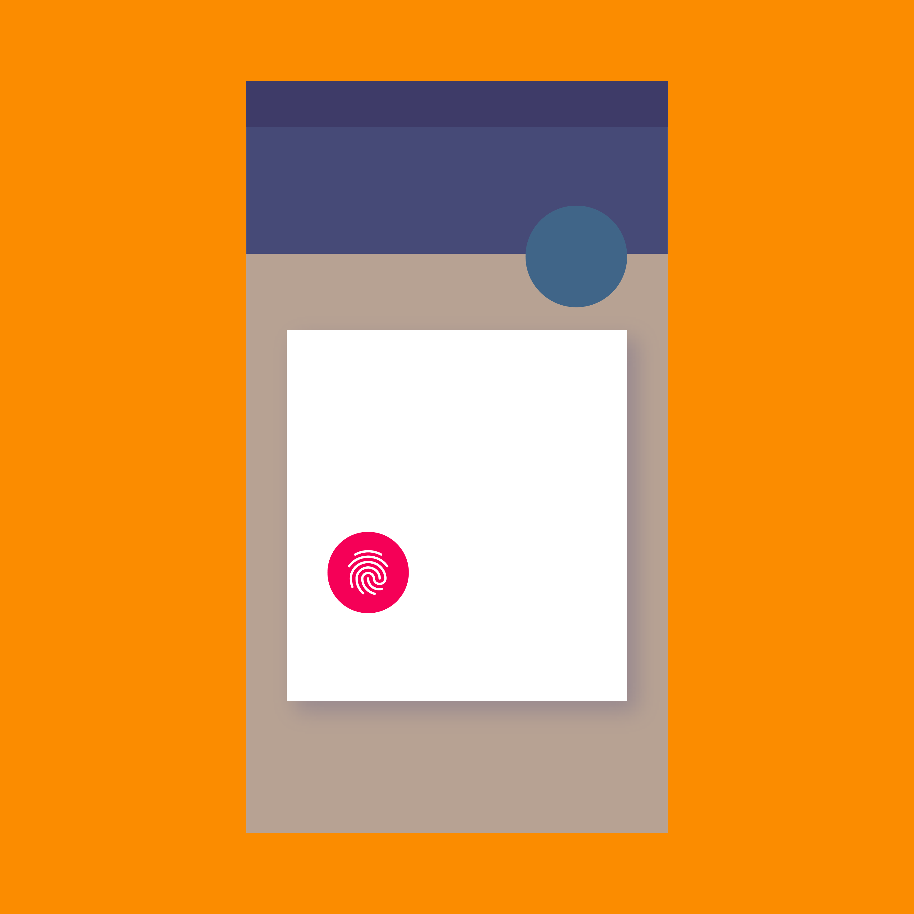

仅支持 Android
指纹识别可用于解锁设备，登录应用以及用于 Google Play 和某些第三方应用的购买的验证。
要使用指纹验证购买，请显示指纹验证对话框。
指纹不如复杂的 PIN 或密码安全。指纹验证的备用方案包括用户的账号密码，应用 PIN 和设备证书。
何时使用
打开应用的时候
在应用的购买流程中
在应用的设置中
注册后
图标
指纹图标大小：24dp
圆环图标：40dp

仅支持 Android
要使用指纹验证购买，请显示指纹验证对话框。
指纹不如复杂的 PIN 或密码安全。指纹验证的备用方案包括用户的账号密码，应用 PIN 和设备证书。
打开应用的时候
在应用的购买流程中
在应用的设置中
注册后
指纹图标大小：24dp
圆环图标：40dp
你的应用在使用指纹之前，必须先获得用户的同意，允许你使用指纹作为验证账户的备用方法。
邀请用户尝试指纹的时间可以是：
用户可以在登录后立即验证其指纹。
用户可以在创建账号后立即注册他们的指纹。
用户可以在使用现有账户进行购买后，立即验证他们的指纹。
用户可以在应用的设置中启用指纹锁定功能。
注册后，每当需要用户验证时都可以出现指纹对话框。
用户可以设置使用指纹来验证登录、或验证购买行为。
当需要验证用户操作时，显示指纹验证对话框代替登录界面。
标题
使用标题来描述正在执行的操作，例如 “登录” 。标题不应该用来介绍指纹。
副文本
使用 “确认指纹” 来和 Android 的设置保持一致性。
你可以将上述文本和用户的操作相结合，例如 “确认指纹以完成购买” 。
指纹验证对话框
指纹验证对话框规格：
对话框左右内边距：24dp
对话框顶部内边距：24dp
标题底部外边距：20dp
副标题底部外边距：28dp
指纹图标右侧外边距：16dp
触摸传感器高度：40dp
触摸传感器文本上下外边距：12dp
按钮容器高度：52dp
按钮容器底部内边距：8dp
按钮高度：36p
按钮左右边距：8dp
要求用户将他们的手指放在传感器上。

默认状态要求用户将他们的手指放在传感器上
一旦识别到指纹，将对话框更改为成功的消息，将图像更改为带有复选标记的指纹图标。
规格：
成功状态应避免：

表示指纹已被识别的成功消息
失败时，提供一个清楚的提示，可以是带或不带状态消息的错误图标，告诉用户指纹未被识别，可以再次尝试。
规格：
失败状态应避免：

指出无法识别指纹的错误信息
提供其他方法退出对话框。至少，要提供关闭指纹对话框的功能，例如 “取消” 按钮。
指纹图标应该以标准的系统图标大小 24dp，显示在 40dp 的圆圈内。
40dp 的圆圈

24dp 的系统图标
用户会在可以使用指纹的地方找到此图标。
规格：

默认图标

对话框和默认图标
图标外的圆圈可以使用不同颜色来定制，该颜色为指纹图标提供合适的对比度。

有对比度的有色图标

错误示例
不要使用带多种颜色的指纹图标。
浅色背景的 UI 界面上
使用带深色圆圈背景的指纹图标。
规格：
浅色背景下，使用带深色圆圈背景的指纹图标
深色背景的 UI 界面上
使用带浅色圆圈背景的指纹图标。
规格：
需要更多通用指纹图标的应用可能会消除圆形背景。
没有圆形背景的图标
没有圆形背景图标的对话框

错误示例
不要倾斜或扭曲指纹图标。
重新验证适用于用户在继续操作之前需要确认其身份的情况。
重新验证用于：

重新验证对话框
或者，如果用户不考虑使用指纹验证，你可以要求他们使用备用密码，并在下一次提醒他们使用指纹。
询问用户备用密码的对话框